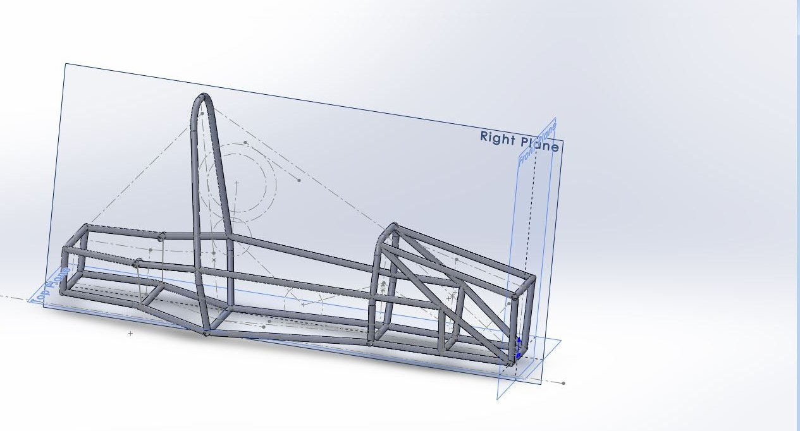

Objective
Model and evaluate a Formula Student tubular space-frame chassis using CAD and FEA.
Method
I modelled the chassis in SolidWorks and simplified its geometry for analysis, then ran a simple torsion test in Abaqus: one end of the frame was held while a twisting load was applied at the other, and torsional stiffness was calculated from the resulting twist.

Results
The test gave a first estimate of the frame’s torsional stiffness and showed where stress concentrated, mainly at the tube joints.
Conclusion
As a first-pass design the frame was reasonable. The next steps would be reinforcing the most highly stressed joints and rerunning the test with a finer mesh and load cases based on the Formula Student rules.